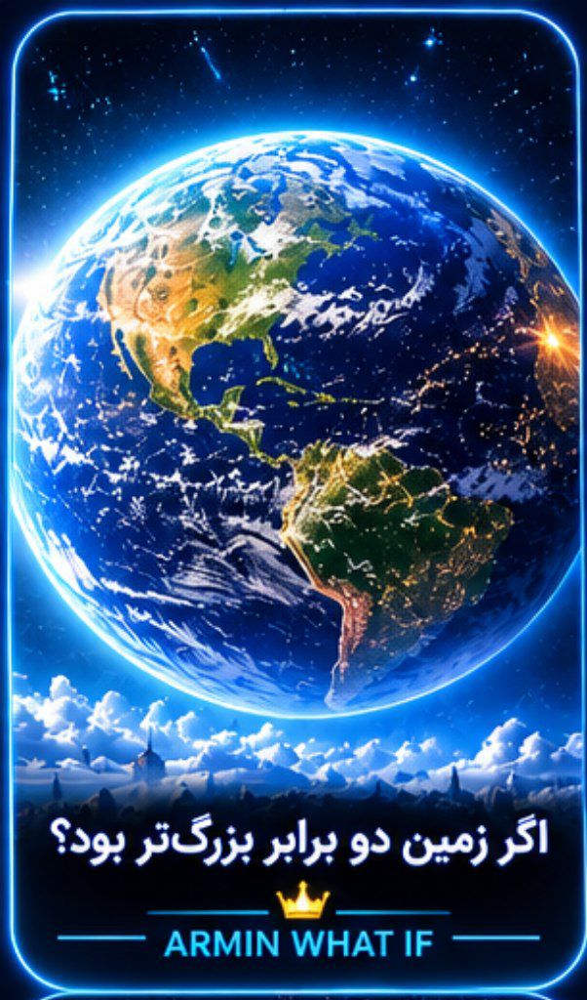
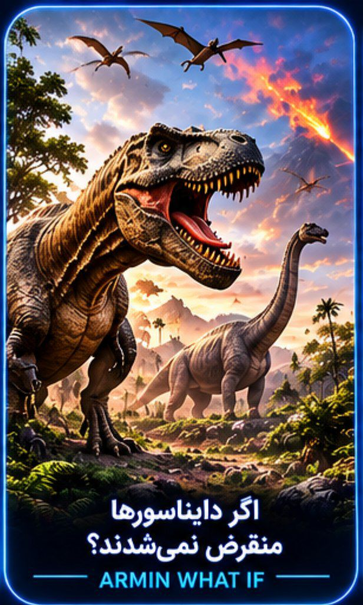
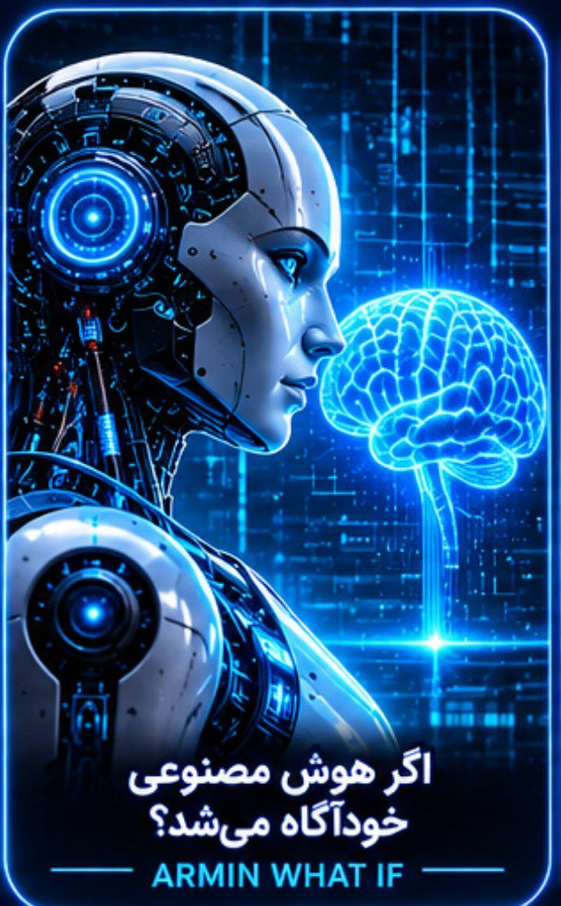
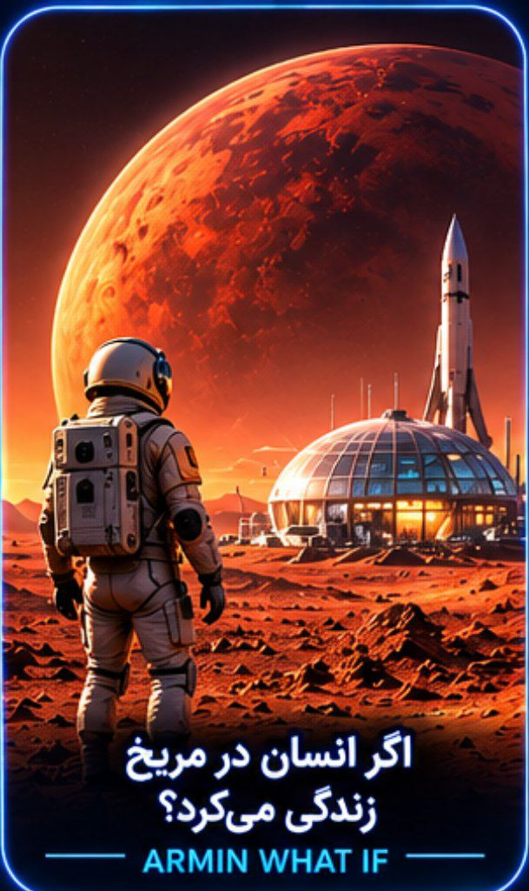
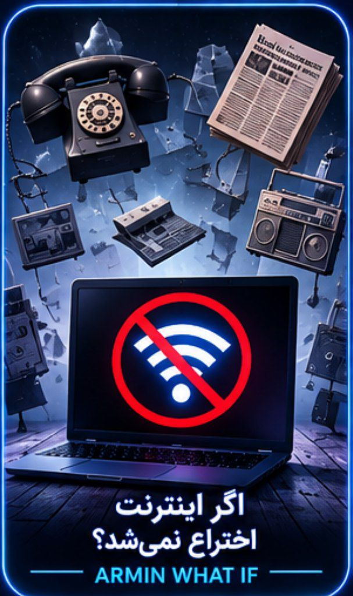
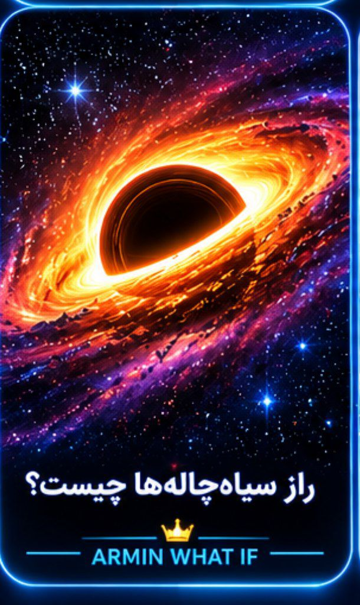
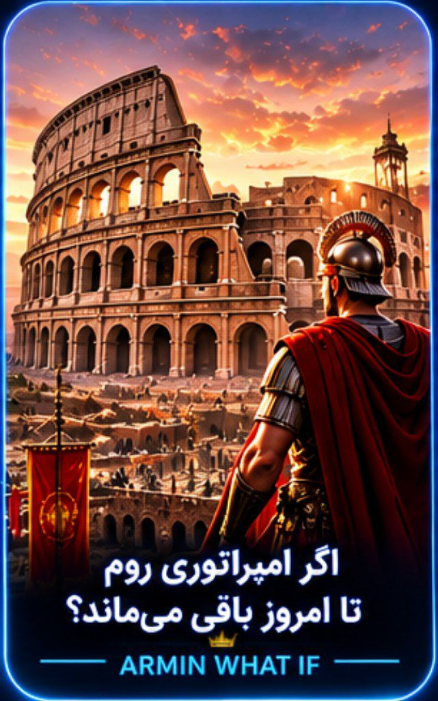
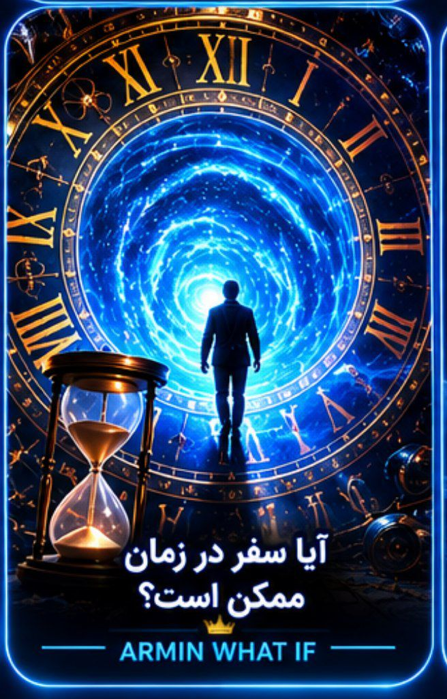
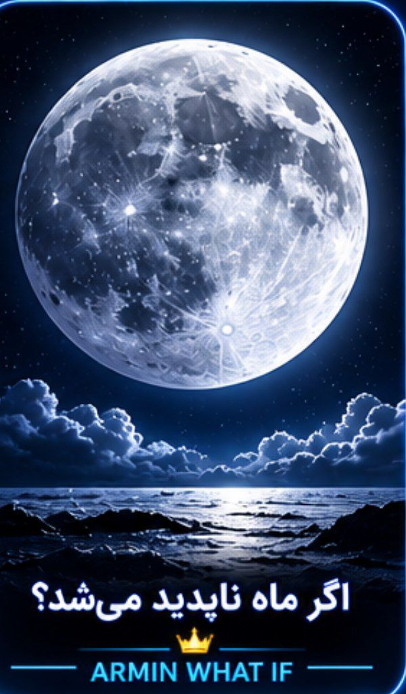
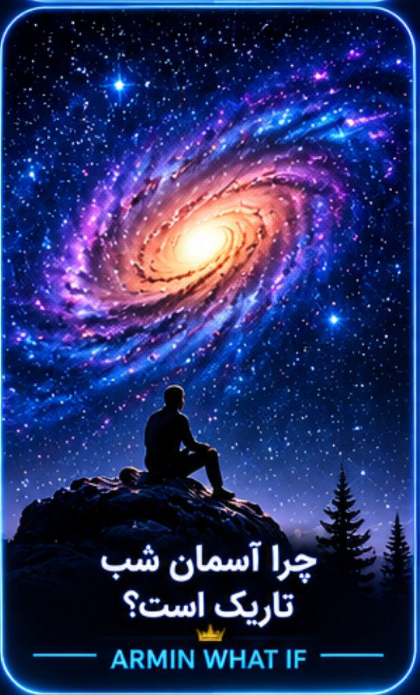

WHAT IF?اگر زمین دو برابر بزرگتر بود، چه میشد؟
از گرانش گرفته تا اقیانوسها؛ اندازه سیاره ما چه تأثیری بر زندگی داشت؟
تصور کن غیرممکنها ممکن شوند.
Imagine the Impossible.
به ناشناختهها قدم بگذار و دنیا را از زاویهای تازه ببین.
سؤالهایی که ذهن را به سفر میبرند

WHAT IF?از گرانش گرفته تا اقیانوسها؛ اندازه سیاره ما چه تأثیری بر زندگی داشت؟

HISTORYآیا پستانداران و انسانها فرصت ظهور پیدا میکردند؟

TECHNOLOGYمرز میان ابزار هوشمند و ذهن مستقل کجاست؟

SPACEزندگی روزمره روی سیاره سرخ چه تفاوتهایی با زمین داشت؟

TECHNOLOGYارتباطات، آموزش و کسبوکارها در دنیای بدون اینترنت چگونه بودند؟

SCIENCEدانشمندان چگونه اجرامی را بررسی میکنند که حتی نور هم از آنها نمیگریزد؟

HISTORYجهان امروز در این سناریوی تاریخی فرضی چه شکلی میتوانست داشته باشد؟

FUTUREفیزیک درباره سفر در زمان چه میگوید و چه چیزهایی هنوز ناشناختهاند؟

WHAT IF?جزر و مد و آسمان شب چه تغییراتی را تجربه میکردند؟

SCIENCEیک پرسش ساده که به تاریخ کیهان و عمر جهان مربوط میشود.
موضوع مورد علاقهات را انتخاب کن
اینجا جایی برای پرسیدن سؤالهای متفاوت است؛ از رازهای تاریخ و شگفتیهای علم تا آینده فناوری و سناریوهایی که ذهن را به چالش میکشند. مطالب واقعی با تکیه بر منابع معتبر نوشته میشوند و سناریوهای خیالی بهروشنی با عنوان فرضیه مشخص خواهند شد.
ماجراجویی را شروع کن ←